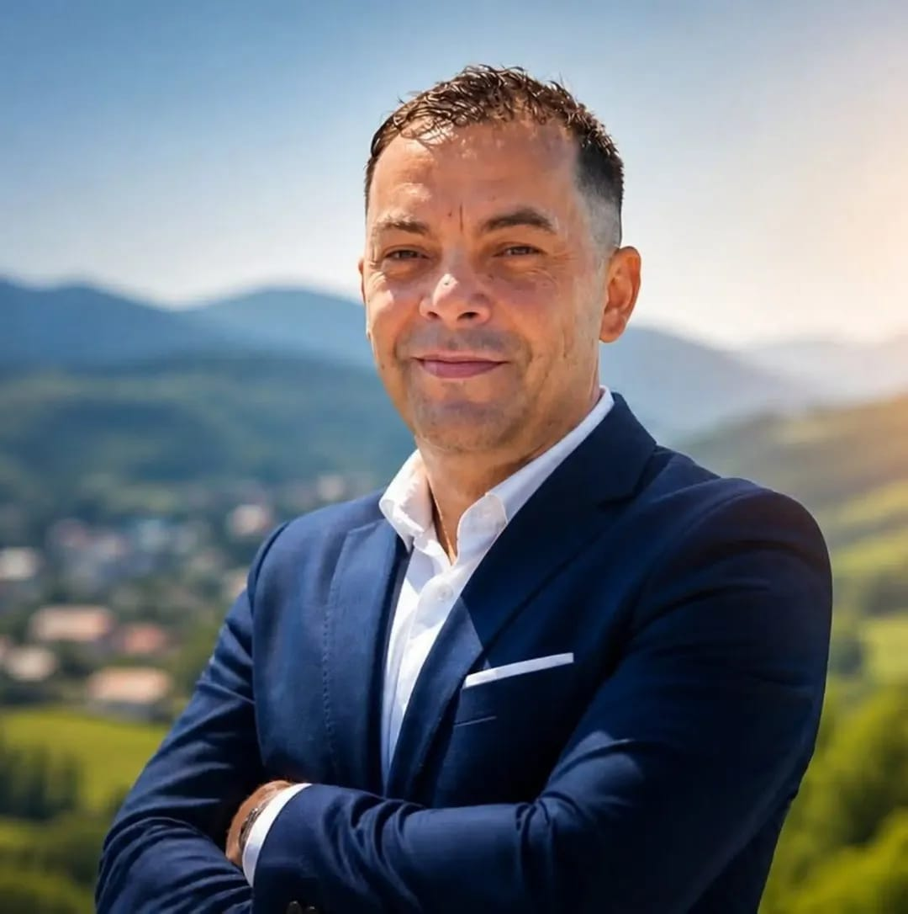

Conectare prin Meta. Instagram va putea fi gestionat prin Facebook pentru conturile profesionale eligibile, asociate unei Pagini Facebook.
Stare: integrarea Meta și aprobarea permisiunilor sunt necesare.✚ Dr.Vas AI
YOUR LANGUAGE · YOUR DR.VAS
Select your language
Choose the language you want to use throughout Dr.Vas.
INTELLIGENCE WITHOUT LIMITS
Gândește diferit.
Întreabă Dr.Vas.
Un asistent inteligent, pregătit să exploreze idei, să explice lucruri complexe și să te ajute în fiecare zi.
Povestea din spatele Dr.Vas
Un proiect născut din experiență, muncă și dorința de a construi ceva folositor.
Dr.Vas AI este proiectul inițiat de Vasile-Cătălin Prodan, cunoscut ca Cătălin sau Vas, împreună cu Jan, colaboratorul său virtual AI. Numele „Vas” vine de la numele lui Cătălin, iar „Dr.” a pornit de la o poreclă primită de la colegi — nu este o calificare medicală. Cătălin nu este medic.
Timp de aproximativ 25 de ani, Cătălin a fost implicat în viața publică și politică din România, inclusiv în activitate de consilier și curier personal al unui deputat din Parlamentul României. Au existat experiențe bune și grele, responsabilități, reușite, greșeli și năzbâtii omenești din care a învățat. Nu își prezintă drumul ca pe unul perfect și nu inventăm întâmplări pentru a-l înfrumuseța.
Mai târziu a început un nou capitol în Regatul Unit, unde lucrează de peste opt ani în NHS ca Senior Healthcare Assistant, într-un rol de îngrijire și sprijin, nu de medic. Experiența de lângă oameni a întărit convingerea că tehnologia și informația trebuie să fie în slujba oamenilor.
Dr.Vas se construiește pas cu pas, cu resurse limitate și multă perseverență. Ambiția este o platformă integrată pentru asistență AI generală, informații despre sănătate, creație, educație, comerț și sprijin pentru afaceri. Unele funcții sunt încă în dezvoltare; promitem să fim sinceri despre ce este și ce nu este disponibil.
Platforma Dr.Vas
Alege spațiul de lucru de care ai nevoie.
✦ DR.VAS · CONVERSAȚIE

Dr.Vas AI
Platformă inteligentă integrată
Alege asistentul tău
Asistentul principal Dr.Vas este pregătit să te ajute.
Bun venit la Dr.Vas AI! Cu ce te pot ajuta astăzi?
Microfonul se activează numai după apăsare. În modul Live, sunetul este transmis către Gemini pentru răspuns în timp real și poate consuma utilizare API; în modul dictare, recunoașterea poate fi procesată de browser. Dr.Vas nu păstrează înregistrări audio; transcrierile text se salvează în istoricul conversației.
Răspunsurile AI pot conține erori. Verifică informațiile importante.